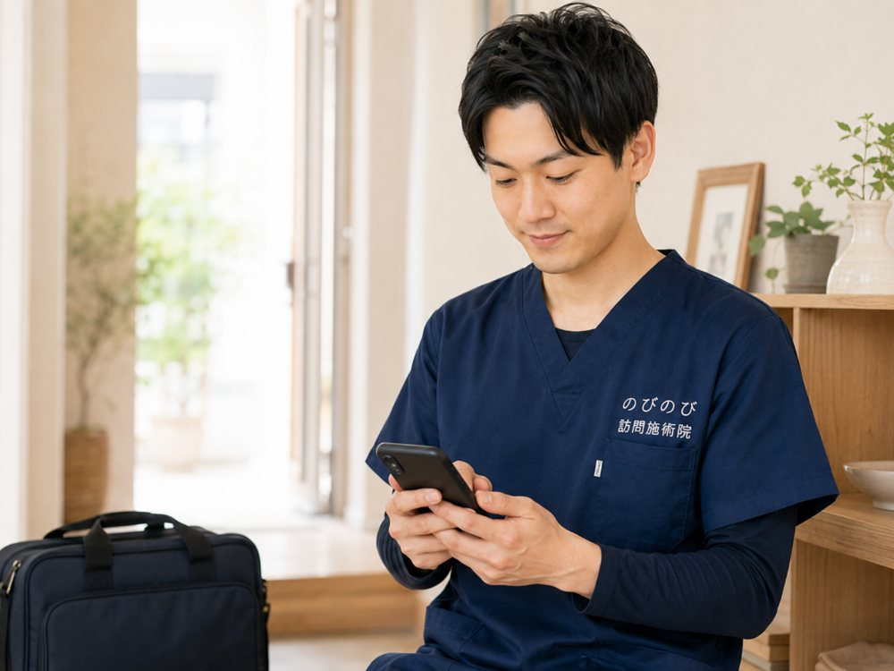

私たちと一緒に
私たちと一緒にMESSAGE
一人ひとりに、丁寧に寄り添える職場。
私たちは、ご自宅や施設へ訪問し、患者様お一人おひとりに合わせた施術を提供しています。地域に根ざしたサービスを目指し、患者様とのコミュニケーションを大切にしています。
古い慣習もなく、直行直帰OK・残業ほぼなし。社会保険完備や賞与年2回など福利厚生も整っており、安心して長く働ける環境です。患者様に寄り添った施術を心掛けられる方を歓迎します。
働く環境
残業ほぼなし・直行直帰OK
9:00〜18:00勤務で残業はほぼなし。直行直帰が可能で、時短勤務の相談も受け付けています。
完全週休2日制
土・日・祝休みで年間休日120日以上。子育て支援も充実し、プライベートも大切にできます。
研修・成長支援
入社後に技術研修・フォローアップ研修を実施。ブランクのある方も安心してスタートできます。
仕事内容
01
訪問施術
ご自宅や施設へ訪問し、患者様に最適な施術を提供します。運動療法・機能訓練のサポートも行い、お一人おひとりに寄り添ったケアを大切にしています。

02
記録・報告書作成
スマホで施術記録や報告書の作成を行っていただきます。施術に集中できるサポート体制を整えています。

03
移動は社用車など
移動には社用車または電動自転車・バイクを使用します。社名や広告のない車で、外出中は私服でもOKです。

募集要項
大阪院にて、鍼灸師・あん摩マッサージ指圧師（正職員）を募集しています。パート・業務委託もご相談ください。
鍼灸師
はり師・きゅう師
正職員・月給300,000円〜
- 基本給200,000円〜
- 職務手当10,000円〜
- 資格手当40,000円〜
- 固定残業代50,000円
あん摩マッサージ指圧師
あマ指師
正職員・月給350,000円〜
- 基本給200,000円〜
- 職務手当10,000円〜
- 資格手当90,000円〜
- 固定残業代50,000円
※ 固定残業代は20時間分です。超過分は法定どおり支給します。経験・能力を考慮し、前職給与保証のご相談も可能です。パート・アルバイト／業務委託の給与は別途ご相談ください。
| 募集職種 | 鍼灸師（はり師・きゅう師）／あん摩マッサージ指圧師パート・アルバイト／業務委託も募集しています。 |
|---|---|
| 諸手当 | 通勤手当（上限10,000円）／昇給 年1回（業績による）／賞与 年2回（業績による） |
| 勤務時間 | 9:00〜18:00（休憩60分）／残業ほぼなし時短勤務の相談可。直行直帰が可能です。 |
| 休日休暇 | 完全週休2日制（土・日・祝休み）／年間休日120日以上有給休暇（10日間）・慶弔休暇・年末年始・夏季休暇・ゴールデンウィーク・産休・育休 |
| 待遇・福利厚生 | 社会保険完備（雇用・労災・健康・厚生年金）／交通費支給／車通勤可／制服貸与／副業OK／WEB面接可／電動自転車あり／健康診断あり／インフルエンザ予防接種あり／研修制度あり |
| 応募要件 | 「はり師」「きゅう師」または「あん摩マッサージ指圧師」免許をお持ちの方 ※ブランク可／年齢・学歴不問。難しいパソコンスキルは不要です。ネイル・ピアス・髪色・髪型自由（患者様対応に支障のない範囲）。 |
| 勤務地 | 大阪院：大阪府大阪市淀川区西中島4-7-8 サンコープラザ 8D 大阪メトロ御堂筋線「西中島南方駅」徒歩2分／阪急京都本線「南方駅」徒歩6分 |
※ 玉川院は現在募集を行っておりません。現在は大阪院のみの募集となります。
選考プロセス
- お問い合わせフォームまたはお電話よりご応募ください。
- 採用担当より面接日程の調整などのご連絡をいたします。
- 面接実施 → 採用決定のご連絡 → 入職手続き、という流れです。
- 在職中で今すぐの転職が難しい方も、調整のご相談が可能です。WEB面接にも対応しています。
応募前によくいただくご質問
- 月給300,000円・350,000円には残業代が含まれますか？
固定残業代50,000円（20時間分）が含まれています。20時間を超えた分は法定どおり別途お支払いします。経験や能力は選考のなかで考慮しますので、前職の給与保証もご相談いただけます。給与の内訳は給料の記事に詳しく書いています。 - 鍼灸師とあん摩マッサージ指圧師、どちらか一方でも応募できますか？
どちらか一方でもご応募いただけます。両方お持ちの方は、担当できる方の幅が広がるぶん資格手当に反映しています。違いはこちらの記事にまとめました。 - 訪問の経験がなくても大丈夫ですか？
訪問の経験は問いません。入職後に技術研修とフォローアップ研修があり、同行の期間を経てから独り立ちします。ブランクのある方も歓迎しています。 - ノルマや、自費・物販の営業はありますか？
ありません。正職員は月給制で、件数を詰め込むことも前提にしていません。 - パートや時短、業務委託でも働けますか？
いずれもご相談いただけます。週の日数や時間帯は個別に調整します。詳しくはパート・時短・業務委託の記事をご覧ください。 - 在職中ですが、面接は受けられますか？
WEB面接に対応しています。開始時期の調整もご相談いただけますので、いまのご状況をお知らせください。 - 運転が苦手でも働けますか？
社用車のほか、電動自転車やバイクも選べます。担当エリアに合わせて相談できます。 - どのエリアを担当しますか？
大阪市（淀川区・東淀川区・都島区・北区・旭区）、豊中・吹田・茨木・高槻・箕面・摂津・池田、尼崎・伊丹です。お住まいに近いエリアから担当いただくのが基本です。